Microsoft Azure Fundamentals Certification Exam Questions
Question 1
A company employs a team of customer service agents to provide telephone and email support to customers.
The company develops a webchat bot to provide automated answers to common customer queries.
Which business benefit should the company expect as a result of creating the webchat bot solution?
A. increased sales
B. a reduced workload for the customer service agents
C. improved product reliability
Answer 1
Correct Answer: B
Question 2
For a machine learning progress, how should you split data for training and evaluation?
A. Use features for training and labels for evaluation.
B. Randomly split the data into rows for training and rows for evaluation.
C. Use labels for training and features for evaluation.
D. Randomly split the data into columns for training and columns for evaluation.
Answer 2
Correct Answer: B
The Split Data module is particularly useful when you need to separate data into training and testing sets. Use the Split Rows option if you want to divide the data into two parts. You can specify the percentage of data to put in each split, but by default, the data is divided 50-50. You can also randomize the selection of rows in each group, and use stratified sampling.
Reference:
https://docs.microsoft.com/en-us/azure/machine-learning/studio-module-reference/split-data
Question 3
HOTSPOT -
You are developing a model to predict events by using classification.
You have a confusion matrix for the model scored on test data as shown in the following exhibit.
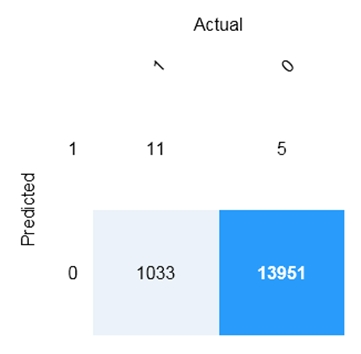
Use the drop-down menus to select the answer choice that completes each statement based on the information presented in the graphic.
NOTE: Each correct selection is worth one point.
Hot Area:
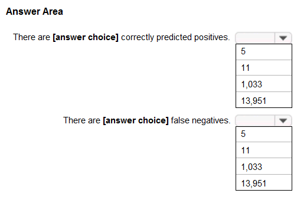
Answer 3
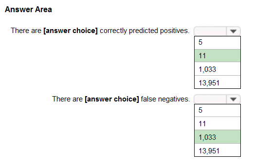
Box 1: 11 -
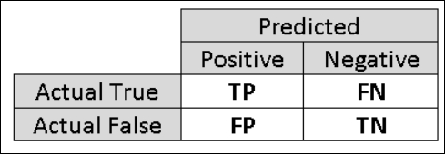
TP = True Positive.
The class labels in the training set can take on only two possible values, which we usually refer to as positive or negative. The positive and negative instances that a classifier predicts correctly are called true positives (TP) and true negatives (TN), respectively. Similarly, the incorrectly classified instances are called false positives (FP) and false negatives (FN).
Box 2: 1,033 -
FN = False Negative -
Reference:
https://docs.microsoft.com/en-us/azure/machine-learning/studio/evaluate-model-performance
Question 4
You build a machine learning model by using the automated machine learning user interface (UI).
You need to ensure that the model meets the Microsoft transparency principle for responsible AI.
What should you do?
A. Set Validation type to Auto.
B. Enable Explain best model.
C. Set Primary metric to accuracy.
D. Set Max concurrent iterations to 0.
Answer 4
Correct Answer: B
Model Explain Ability.
Most businesses run on trust and being able to open the ML ג€black boxג€ helps build transparency and trust. In heavily regulated industries like healthcare and banking, it is critical to comply with regulations and best practices. One key aspect of this is understanding the relationship between input variables (features) and model output. Knowing both the magnitude and direction of the impact each feature (feature importance) has on the predicted value helps better understand and explain the model. With model explain ability, we enable you to understand feature importance as part of automated ML runs.
Reference:
Question 5
HOTSPOT -
For each of the following statements, select Yes if the statement is true. Otherwise, select No.
NOTE: Each correct selection is worth one point.
Hot Area:
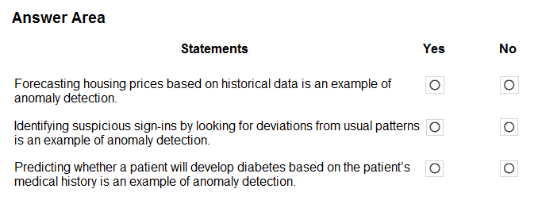
Answer 5
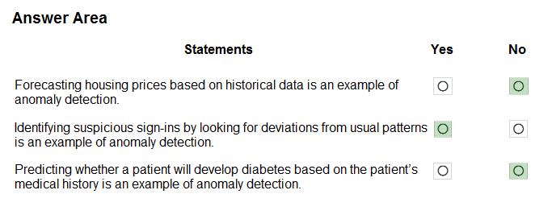
Anomaly detection encompasses many important tasks in machine learning:
Identifying transactions that are potentially fraudulent.
Learning patterns that indicate that a network intrusion has occurred.
Finding abnormal clusters of patients.
Checking values entered into a system.
Reference:
https://docs.microsoft.com/en-us/azure/machine-learning/studio-module-reference/anomaly-detection
Question 6
HOTSPOT -
To complete the sentence, select the appropriate option in the answer area.
Hot Area:
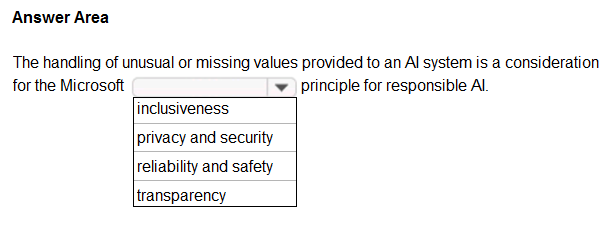
Answer 6
Correct Answer: reliability and safety
Reliability and safety:
AI systems need to be reliable and safe in order to be trusted. It is important for a system to perform as it was originally designed and for it to respond safely to new situations. Its inherent resilience should resist intended or unintended manipulation. Rigorous testing and validation should be established for operating conditions to ensure that the system responds safely to edge cases, and A/B testing and champion/challenger methods should be integrated into the evaluation process.
An AI system's performance can degrade over time, so a robust monitoring and model tracking process needs to be established to reactively and proactively measure the model's performance and retrain it, as necessary, to modernize it.
Reference:
https://docs.microsoft.com/en-us/azure/cloud-adoption-framework/innovate/best-practices/trusted-ai
Question 7
DRAG DROP -
Match the types of AI workloads to the appropriate scenarios.
To answer, drag the appropriate workload type from the column on the left to its scenario on the right. Each workload type may be used once, more than once, or not at all.
NOTE: Each correct selection is worth one point.
Select and Place:
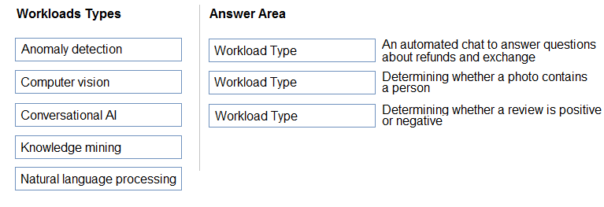
Answer 7
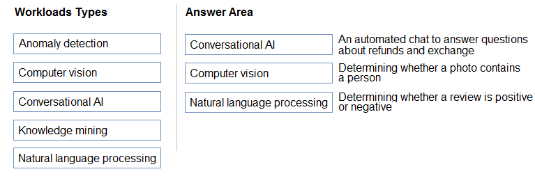
Box 3: Natural language processing
Natural language processing (NLP) is used for tasks such as sentiment analysis, topic detection, language detection, key phrase extraction, and document categorization.
Reference:
Question 8
You are designing an AI system that empowers everyone, including people who have hearing, visual, and other impairments.
This is an example of which Microsoft guiding principle for responsible AI?
A. fairness
B. inclusiveness
C. reliability and safety
D. accountability
Answer 8
Correct Answer: B
Inclusiveness: At Microsoft, we firmly believe everyone should benefit from intelligent technology, meaning it must incorporate and address a broad range of human needs and experiences. For the 1 billion people with disabilities around the world, AI technologies can be a game-changer.
Reference:
https://docs.microsoft.com/en-us/learn/modules/responsible-ai-principles/4-guiding-principles
Question 9
DRAG DROP -
Match the Microsoft guiding principles for responsible AI to the appropriate descriptions.
To answer, drag the appropriate principle from the column on the left to its description on the right. Each principle may be used once, more than once, or not at all.
NOTE: Each correct selection is worth one point.
Select and Place:
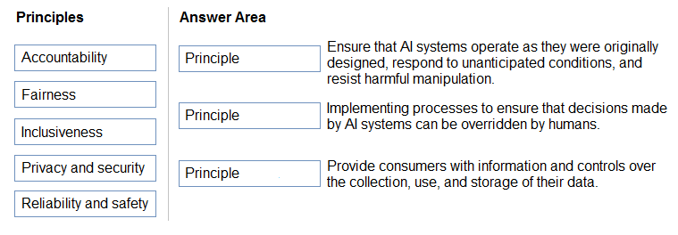
Answer 9
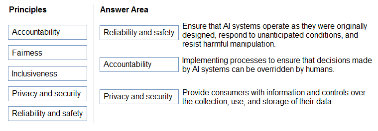
Box 1: Reliability and safety -
To build trust, it's critical that AI systems operate reliably, safely, and consistently under normal circumstances and in unexpected conditions. These systems should be able to operate as they were originally designed, respond safely to unanticipated conditions, and resist harmful manipulation.
Box 2: Accountability -
The people who design and deploy AI systems must be accountable for how their systems operate. Organizations should draw upon industry standards to develop accountability norms. These norms can ensure that AI systems are not the final authority on any decision that impacts people's lives and that humans maintain meaningful control over otherwise highly autonomous AI systems.
Box 3: Privacy and security -
As AI becomes more prevalent, protecting privacy and securing important personal and business information is becoming more critical and complex. With AI, privacy and data security issues require especially close attention because access to data is essential for AI systems to make accurate and informed predictions and decisions about people. AI systems must comply with privacy laws that require transparency about the collection, use, and storage of data and mandate that consumers have appropriate controls to choose how their data is used
Reference:
https://docs.microsoft.com/en-us/learn/modules/responsible-ai-principles/4-guiding-principles
Question 10
HOTSPOT -
To complete the sentence, select the appropriate option in the answer area.
Hot Area:

Answer 10
Correct Answer: reliability and safety
Reliability and safety: To build trust, it's critical that AI systems operate reliably, safely, and consistently under normal circumstances and in unexpected conditions.
These systems should be able to operate as they were originally designed, respond safely to unanticipated conditions, and resist harmful manipulation.
Reference:
https://docs.microsoft.com/en-us/learn/modules/responsible-ai-principles/4-guiding-principles
Question 11
You are building an AI system.
Which task should you include to ensure that the service meets the Microsoft transparency principle for responsible AI?
A. Ensure that all visuals have an associated text that can be read by a screen reader.
B. Enable autoscaling to ensure that a service scales based on demand.
C. Provide documentation to help developers debug code.
D. Ensure that a training dataset is representative of the population.
Answer 11
Correct Answer: C
Reference:
https://docs.microsoft.com/en-us/learn/modules/responsible-ai-principles/4-guiding-principles
Question 12
DRAG DROP -
Match the types of AI workloads to the appropriate scenarios.
To answer, drag the appropriate workload type from the column on the left to its scenario on the right. Each workload type may be used once, more than once, or not at all.
NOTE: Each correct selection is worth one point.
Select and Place:
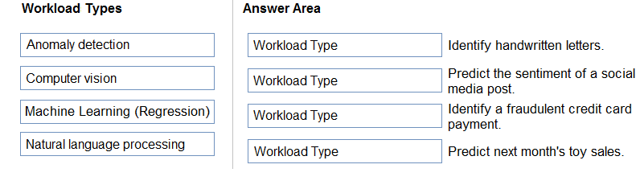
Answer 12
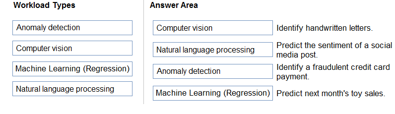
Reference:
https://docs.microsoft.com/en-us/learn/paths/get-started-with-artificial-intelligence-on-azure/
Question 13
Your company is exploring the use of voice recognition technologies in its smart home devices. The company wants to identify any barriers that might unintentionally leave out specific user groups.
This an example of which Microsoft guiding principle for responsible AI?
A. accountability
B. fairness
C. inclusiveness
D. privacy and security
Answer 13
Correct Answer: C
Reference:
https://docs.microsoft.com/en-us/learn/modules/responsible-ai-principles/4-guiding-principles
Question 14
What are three Microsoft guiding principles for responsible AI? Each correct answer presents a complete solution.
NOTE: Each correct selection is worth one point.
A. knowledgeability
B. decisiveness
C. inclusiveness
D. fairness
E. opinionatedness
F. reliability and safety
Answer 14
Correct Answer: C, D, and F
Reference:
https://docs.microsoft.com/en-us/learn/modules/responsible-ai-principles/4-guiding-principles
Question 15
HOTSPOT -
To complete the sentence, select the appropriate option in the answer area.
Hot Area:
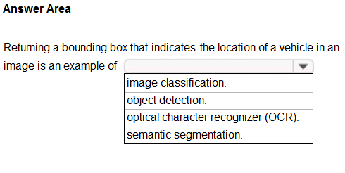
Answer 15
Correct Answer: object detection
Reference:
https://docs.microsoft.com/en-us/azure/cognitive-services/computer-vision/concept-object-detection
Question 16
HOTSPOT -
To complete the sentence, select the appropriate option in the answer area.
Hot Area:
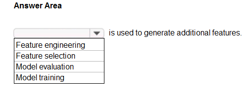
Answer 16
Correct Answer: Feature engineering
Reference:
https://docs.microsoft.com/en-us/azure/machine-learning/team-data-science-process/create-features
Question 17
You run a charity event that involves posting photos of people wearing sunglasses on Twitter.
You need to ensure that you only retweet photos that meet the following requirements:
- Include one or more faces.
- Contain at least one person wearing sunglasses.
What should you use to analyze the images?
A. the Verify operation in the Face service
B. the Detect operation in the Face service
C. the Describe Image operation in the Computer Vision service
D. the Analyze Image operation in the Computer Vision service
Answer 17
Correct Answer: B
Reference:
https://docs.microsoft.com/en-us/azure/cognitive-services/face/overview
Question 18
When you design an AI system to assess whether loans should be approved, the factors used to make the decision should be explainable.
This is an example of which Microsoft guiding principle for responsible AI?
A. transparency
B. inclusiveness
C. fairness
D. privacy and security
Answer 18
Correct Answer: A
Achieving transparency helps the team to understand the data and algorithms used to train the model, what transformation logic was applied to the data, the final model generated, and its associated assets. This information offers insights about how the model was created, which allows it to be reproduced in a transparent way.
Incorrect Answers:
B: Inclusiveness mandates that AI should consider all human races and experiences, and inclusive design practices can help developers to understand and address potential barriers that could unintentionally exclude people. Where possible, speech-to-text, text-to-speech, and visual recognition technology should be used to empower people with hearing, visual, and other impairments.
C: Fairness is a core ethical principle that all humans aim to understand and apply. This principle is even more important when AI systems are being developed.
Key checks and balances need to make sure that the system's decisions don't discriminate or run a gender, race, sexual orientation, or religion bias toward a group or individual.
D: A data holder is obligated to protect the data in an AI system, and privacy and security are an integral part of this system. Personal needs to be secured, and it should be accessed in a way that doesn't compromise an individual's privacy.
Reference:
Question 19
HOTSPOT -
For each of the following statements, select Yes if the statement is true. Otherwise, select No.
NOTE: Each correct selection is worth one point.
Hot Area:

Answer 19

Box 1: Yes -
Achieving transparency helps the team to understand the data and algorithms used to train the model, what transformation logic was applied to the data, the final model generated, and its associated assets. This information offers insights about how the model was created, which allows it to be reproduced in a transparent way.
Box 2: No -
A data holder is obligated to protect the data in an AI system, and privacy and security are an integral part of this system. Personal needs to be secured, and it should be accessed in a way that doesn't compromise an individual's privacy.
Box 3: No -
Inclusiveness mandates that AI should consider all human races and experiences, and inclusive design practices can help developers to understand and address potential barriers that could unintentionally exclude people. Where possible, speech-to-text, text-to-speech, and visual recognition technology should be used to empower people with hearing, visual, and other impairments.
Reference:
https://docs.microsoft.com/en-us/azure/cloud-adoption-framework/innovate/best-practices/trusted-ai
Question 20
DRAG DROP -
Match the principles of responsible AI to appropriate requirements.
To answer, drag the appropriate principles from the column on the left to its requirement on the right. Each principle may be used once, more than once, or not at all. You may need to drag the split bar between panes or scroll to view content.
NOTE: Each correct selection is worth one point.
Select and Place:


Question 21
DRAG DROP -
You plan to deploy an Azure Machine Learning model as a service that will be used by client applications.
Which three processes should you perform in sequence before you deploy the model? To answer, move the appropriate processes from the list of processes to the answer area and arrange them in the correct order.
Select and Place:
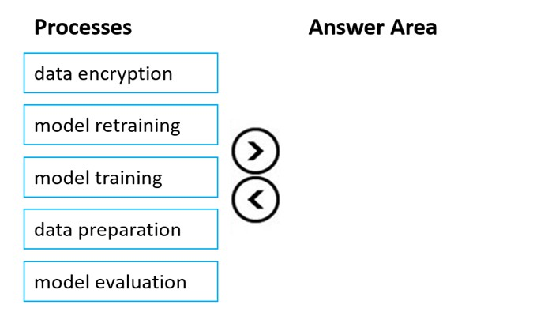
Answer 21
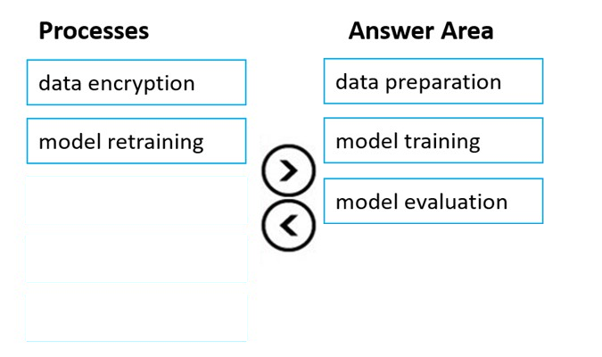
Reference:
https://docs.microsoft.com/en-us/azure/machine-learning/concept-ml-pipelines
Question 22
You are building an AI-based app.
You need to ensure that the app uses the principles for responsible AI.
Which two principles should you follow? Each correct answer presents part of the solution.
NOTE: Each correct selection is worth one point.
A. Implement an Agile software development methodology
B. Implement a process of AI model validation as part of the software review process
C. Establish a risk governance committee that includes members of the legal team, members of the risk management team, and a privacy officer
D. Prevent the disclosure of the use of AI-based algorithms for automated decision making
Answer 22
Correct Answer: B and C
Reference:
Question 23
HOTSPOT -
To complete the sentence, select the appropriate option in the answer area.
Hot Area:
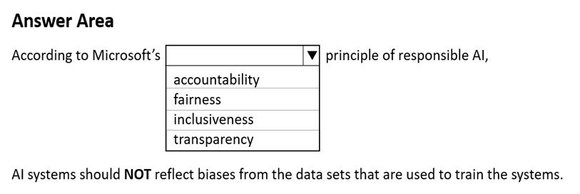
Answer 23
Correct Answer: fairness
Reference:*
https://docs.microsoft.com/en-us/azure/cloud-adoption-framework/innovate/best-practices/trusted-ai
Question 24
DRAG DROP -
Match the machine learning tasks to the appropriate scenarios.
To answer, drag the appropriate task from the column on the left to its scenario on the right. Each task may be used once, more than once, or not at all.
NOTE: Each correct selection is worth one point.
Select and Place:
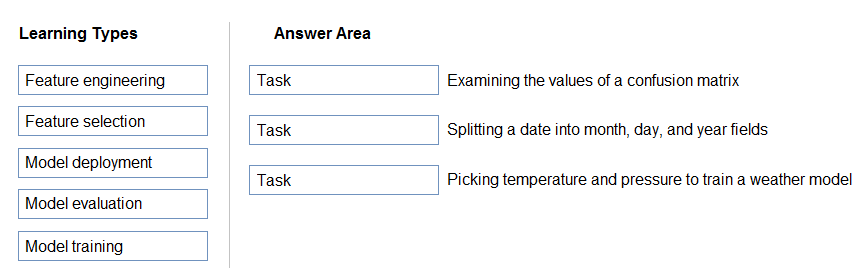
Answer 24
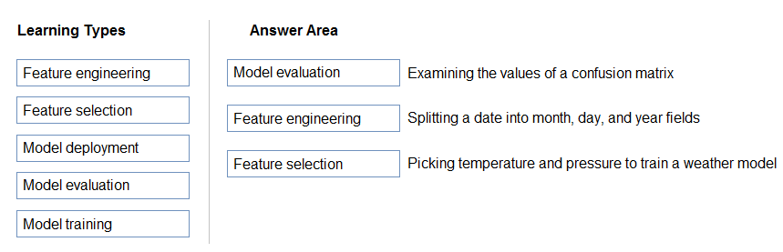
Box 1: Model evaluation -
The Model evaluation module outputs a confusion matrix showing the number of true positives, false negatives, false positives, and true negatives, as well as ROC, Precision/Recall, and Lift curves.
Box 2: Feature engineering -
Feature engineering is the process of using domain knowledge of the data to create features that help ML algorithms learn better. In Azure Machine Learning, scaling and normalization techniques are applied to facilitate feature engineering. Collectively, these techniques and feature engineering are referred to as featurization.
Note: Often, features are created from raw data through a process of feature engineering. For example, a time stamp in itself might not be useful for modeling until the information is transformed into units of days, months, or categories that are relevant to the problem, such as holiday versus working day.
Box 3: Feature selection -
In machine learning and statistics, feature selection is the process of selecting a subset of relevant, useful features to use in building an analytical model. Feature selection helps narrow the field of data to the most valuable inputs. Narrowing the field of data helps reduce noise and improve training performance.
Reference:
https://docs.microsoft.com/en-us/azure/machine-learning/studio/evaluate-model-performance
https://docs.microsoft.com/en-us/azure/machine-learning/concept-automated-ml
Question 25
HOTSPOT -
To complete the sentence, select the appropriate option in the answer area.
Hot Area:
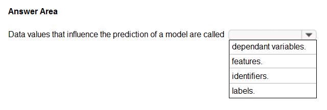
Question 26
You have the Predicted vs. True chart shown in the following exhibit.

Which type of model is the chart used to evaluate?
A. classification
B. regression
C. clustering
Answer 26
Correct Answer: B
What is a Predicted vs. True chart?
Predicted vs. True shows the relationship between a predicted value and its correlating true value for a regression problem. This graph can be used to measure performance of a model as the closer to the y=x line the predicted values are, the better the accuracy of a predictive model.
Reference:
https://docs.microsoft.com/en-us/azure/machine-learning/how-to-understand-automated-m
Question 27
Which type of machine learning should you use to predict the number of gift cards that will be sold next month?
A. classification
B. regression
C. clustering
Answer 27
Correct Answer: B
In the most basic sense, regression refers to prediction of a numeric target.
Linear regression attempts to establish a linear relationship between one or more independent variables and a numeric outcome, or dependent variable.
You use this module to define a linear regression method, and then train a model using a labeled dataset. The trained model can then be used to make predictions.
Reference:
https://docs.microsoft.com/en-us/azure/machine-learning/studio-module-reference/linear-regression
Question 28
You have a dataset that contains information about taxi journeys that occurred during a given period.
You need to train a model to predict the fare of a taxi journey.
What should you use as a feature?
A. the number of taxi journeys in the dataset
B. the trip distance of individual taxi journeys
C. the fare of individual taxi journeys
D. the trip ID of individual taxi journeys
Answer 28
Correct Answer: B
The label is the column you want to predict. The identified Features are the inputs you give the model to predict the Label.
Example:
The provided data set contains the following columns:
vendor_id: The ID of the taxi vendor is a feature.
rate_code: The rate type of the taxi trip is a feature.
passenger_count: The number of passengers on the trip is a feature. trip_time_in_secs: The amount of time the trip took. You want to predict the fare of the trip before the trip is completed. At that moment, you don't know how long the trip would take. Thus, the trip time is not a feature and you'll exclude this column from the model. trip_distance: The distance of the trip is a feature. payment_type: The payment method (cash or credit card) is a feature. fare_amount: The total taxi fare paid is the label.
Reference:
https://docs.microsoft.com/en-us/dotnet/machine-learning/tutorials/predict-prices
Question 29
You need to predict the sea level in meters for the next 10 years.
Which type of machine learning should you use?
A. classification
B. regression
C. clustering
Answer 29
Correct Answer: B 🗳️
In the most basic sense, regression refers to prediction of a numeric target.
Linear regression attempts to establish a linear relationship between one or more independent variables and a numeric outcome, or dependent variable.
You use this module to define a linear regression method, and then train a model using a labeled dataset. The trained model can then be used to make predictions.
Reference:
https://docs.microsoft.com/en-us/azure/machine-learning/studio-module-reference/linear-regression
Question 30
HOTSPOT:
For each of the following statements, select Yes if the statement is true. Otherwise, select No.
NOTE: Each correct selection is worth one point.
Hot Area:
| Statements | Yes No |
|---|---|
| Automated machine learning is the process of automating the time-consuming, iterative tasks of machine learning model development. | ⚪️ ⚪️ |
| Automated machine learning can automatically infer the training data from the use case provided. A graphical interface enabling no-code development of machine learning solutions | ⚪️ ⚪️ |
| Automated machine learning works by running multiple training iterations that are scored and ranked by the metrics you specify. | ⚪️ ⚪️ |
| Automated machine learning enables you to specify a dataset and will automatically understand which label to predict. | ⚪️ ⚪️ |
Answer 30
| Statements | Yes No |
|---|---|
| Automated machine learning is the process of automating the time-consuming, iterative tasks of machine learning model development. | 🟢 ⚪️ |
| Automated machine learning can automatically infer the training data from the use case provided. A graphical interface enabling no-code development of machine learning solutions | ⚪️ 🟢️ |
| Automated machine learning works by running multiple training iterations that are scored and ranked by the metrics you specify. | 🟢 ⚪️ |
| Automated machine learning enables you to specify a dataset and will automatically understand which label to predict. | ⚪️ 🟢️ |
Box 1: Yes -
Automated machine learning, also referred to as automated ML or AutoML, is the process of automating the time consuming, iterative tasks of machine learning model development. It allows data scientists, analysts, and developers to build ML models with high scale, efficiency, and productivity all while sustaining model quality.
Box 2: No -
Box 3: Yes -
During training, Azure Machine Learning creates a number of pipelines in parallel that try different algorithms and parameters for you. The service iterates through ML algorithms paired with feature selections, where each iteration produces a model with a training score. The higher the score, the better the model is considered to "fit" your data. It will stop once it hits the exit criteria defined in the experiment.
Box 4: No -
Apply automated ML when you want Azure Machine Learning to train and tune a model for you using the target metric you specify. The label is the column you want to predict.
Reference:
https://azure.microsoft.com/en-us/services/machine-learning/automatedml/#features
Question 31
HOTSPOT -
To complete the sentence, select the appropriate option in the answer area.
Hot Area:
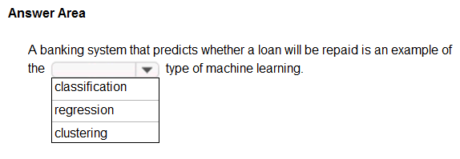
Answer 1
Correct Answer: classification
Two-class classification provides the answer to simple two-choice questions such as Yes/No or True/False.
Question 32
HOTSPOT -
For each of the following statements, select Yes if the statement is true. Otherwise, select No. NOTE: Each correct selection is worth one point.
Hot Area:
| Statements | Yes No |
|---|---|
| Labelling is the process of tagging training data with known values | ⚪️ ⚪️ |
| You should evaluate a model by using the same data used to train the model | ⚪️ ⚪️ |
| Accuracy is always the primary metric used to measure a model's performance | ⚪️ ⚪️ |
Answer 32
| Statements | Yes No |
|---|---|
| Labelling is the process of tagging training data with known values | 🟢 ⚪️ |
| You should evaluate a model by using the same data used to train the model | ⚪️ 🟢️ |
| Accuracy is always the primary metric used to measure a model's performance | ⚪️ 🟢️ |
Box 1: Yes -
In machine learning, if you have labeled data, that means your data is marked up, or annotated, to show the target, which is the answer you want your machine learning model to predict. In general, data labeling can refer to tasks that include data tagging, annotation, classification, moderation, transcription, or processing.
Box 2: No -
Box 3: No -
Accuracy is simply the proportion of correctly classified instances. It is usually the first metric you look at when evaluating a classifier. However, when the test data is unbalanced (where most of the instances belong to one of the classes), or you are more interested in the performance on either one of the classes, accuracy doesn't really capture the effectiveness of a classifier.
Reference:
https://www.cloudfactory.com/data-labeling-guide https://docs.microsoft.com/en-us/azure/machine-learning/studio/evaluate-model-performance
Question 33
Which service should you use to extract text, key/value pairs, and table data automatically from scanned documents?
A. Form Recognizer
B. Text Analytics
C. Language Understanding
D. Custom Vision
Answer 33
here
Question 34
HOTSPOT -
To complete the sentence, select the appropriate option in the answer area.
Hot Area:
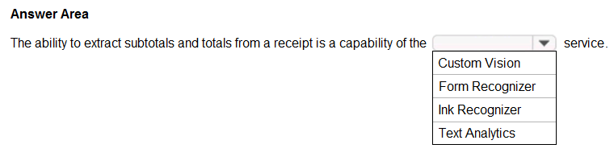
Answer 34
Answer: Form Recognizer
Accelerate your business processes by automating information extraction. Form Recognizer applies advanced machine learning to accurately extract text, key/ value pairs, and tables from documents. With just a few samples, Form Recognizer tailors its understanding to your documents, both on-premises and in the cloud. Turn forms into usable data at a fraction of the time and cost, so you can focus more time acting on the information rather than compiling it.
Reference:
https://azure.microsoft.com/en-us/services/cognitive-services/form-recognizer/
Question 35
You use Azure Machine Learning designer to publish an inference pipeline.
Which two parameters should you use to consume the pipeline? Each correct answer presents part of the solution.
NOTE: Each correct selection is worth one point.
A. the model name
B. the training endpoint
C. the authentication key
D. the REST endpoint
Answer 35
Correct Answer: C and D
You can consume a published pipeline in the Published pipelines page. Select a published pipeline and find the REST endpoint of it.
To consume the pipeline, you need:
-
The REST endpoint for your service
-
The Primary Key for your service
Reference:
Question 36
HOTSPOT -
To complete the sentence, select the appropriate option in the answer area.
Hot Area:
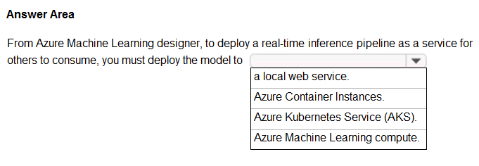
Answer 36
Correct Answer: Aure Kubernetes Service (AKS)
To perform real-time inferencing, you must deploy a pipeline as a real-time endpoint.
Real-time endpoints must be deployed to an Azure Kubernetes Service cluster.
Reference:
https://docs.microsoft.com/en-us/azure/machine-learning/concept-designer#deploy
Question 37
HOTSPOT -
To complete the sentence, select the appropriate option in the answer area.
Hot Area:
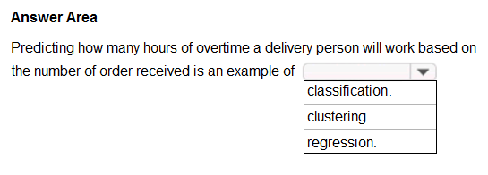
Answer 37
Correct Answer: Regression
In the most basic sense, regression refers to prediction of a numeric target.
Linear regression attempts to establish a linear relationship between one or more independent variables and a numeric outcome, or dependent variable.
You use this module to define a linear regression method, and then train a model using a labeled dataset. The trained model can then be used to make predictions.
Incorrect Answers:
-
Classification is a machine learning method that uses data to determine the category, type, or class of an item or row of data.
-
Clustering, in machine learning, is a method of grouping data points into similar clusters. It is also called segmentation.
Over the years, many clustering algorithms have been developed. Almost all clustering algorithms use the features of individual items to find similar items. For example, you might apply clustering to find similar people by demographics. You might use clustering with text analysis to group sentences with similar topics or sentiment.
Reference:
Question 38
For each of the following statements, select Yes if the statement is true. Otherwise, select No.
NOTE: Each correct selection is worth one point.
Hot Area:
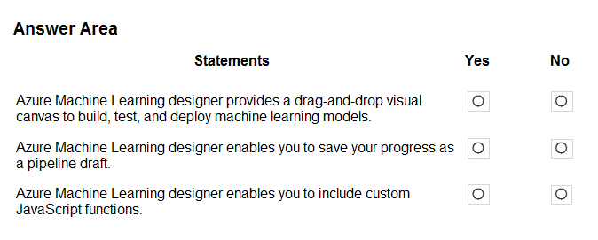
Answer 38
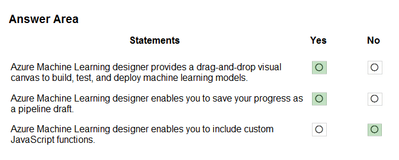
Box 1: Yes -
Azure Machine Learning designer lets you visually connect datasets and modules on an interactive canvas to create machine learning models.
Box 2: Yes -
With the designer you can connect the modules to create a pipeline draft.
As you edit a pipeline in the designer, your progress is saved as a pipeline draft.
Box 3: No -
Reference:
https://docs.microsoft.com/en-us/azure/machine-learning/concept-designer
Question 39
HOTSPOT -
You have the following dataset.
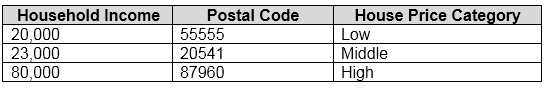
You plan to use the dataset to train a model that will predict the house price categories of houses.
What are Household Income and House Price Category? To answer, select the appropriate option in the answer area.
NOTE: Each correct selection is worth one point.
Hot Area:
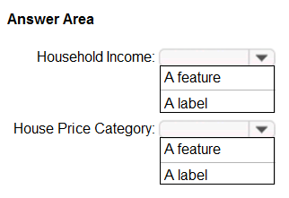
Answer 39
Correct Answers:
-
A feature
-
A label
Reference:
https://docs.microsoft.com/en-us/azure/machine-learning/studio/interpret-model-results
Question 40
HOTSPOT -
To complete the sentence, select the appropriate option in the answer area.
Hot Area:
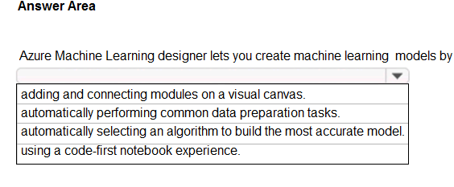
Answer 40
Correct Answer: adding and connecting modules on a visual canvas.
Reference:
https://docs.microsoft.com/en-us/azure/machine-learning/concept-designer
Question 41
HOTSPOT -
For each of the following statements, select Yes if the statement is true. Otherwise, select No.
NOTE: Each correct selection is worth one point.
Hot Area:
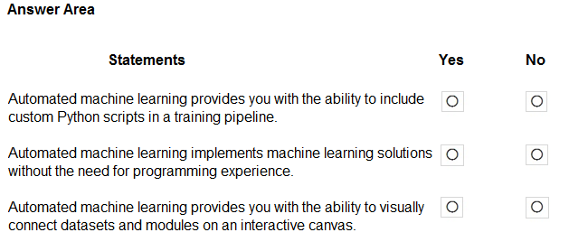
Answer 41
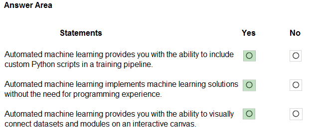
Reference:
Question 42
A medical research project uses a large anonymized dataset of brain scan images that are categorized into predefined brain haemorrhage types.
You need to use machine learning to support early detection of the different brain haemorrhage types in the images before the images are reviewed by a person.
This is an example of which type of machine learning?
A. clustering
B. regression
C. classification
Answer 42
Correct Answer: C
Reference:
Question 43
When training a model, why should you randomly split the rows into separate subsets?
A. to train the model twice to attain better accuracy
B. to train multiple models simultaneously to attain better performance
C. to test the model by using data that was not used to train the model
Answer 43
Correct Answer: C
Question 44 (Obsolete)
You are evaluating whether to use a basic workspace or an enterprise workspace in Azure Machine Learning.
What are two tasks that require an enterprise workspace? Each correct answer presents a complete solution.
NOTE: Each correct selection is worth one point.
A. Use a graphical user interface (GUI) to run automated machine learning experiments.
B. Create a compute instance to use as a workstation.
C. Use a graphical user interface (GUI) to define and run machine learning experiments from Azure Machine Learning designer.
D. Create a dataset from a comma-separated value (CSV) file.
Answer 44
Correct Answer: A and C
Note: Enterprise workspaces are no longer available as of September 2020. The basic workspace now has all the functionality of the enterprise workspace.
Reference:
https://www.azure.cn/en-us/pricing/details/machine-learning/
https://docs.microsoft.com/en-us/azure/machine-learning/concept-workspace
Question 45
You need to predict the income range of a given customer by using the following dataset.
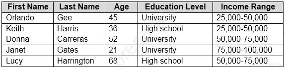
Which two fields should you use as features? Each correct answer presents a complete solution.
NOTE: Each correct selection is worth one point.
A. Education Level
B. Last Name
C. Age
D. Income Range
E. First Name
Answer 45
Correct Answer: A and C
First Name, Last Name, Age and Education Level are features. Income range is a label (what you want to predict). First Name and Last Name are irrelevant in that they have no bearing on income. Age and Education level are the features you should use.
Question 46
The solution will use a custom model.
Which Azure Cognitive Services service should you use?
A. Custom Vision
B. Form Recognizer
C. Face
D. Computer Vision
Answer 46
Correct Answer: A
Reference:
https://docs.microsoft.com/en-us/azure/cognitive-services/custom-vision-service/overview
Question 47
HOTSPOT -
For each of the following statements, select Yes if the statement is true. Otherwise, select No.
NOTE: Each correct selection is worth one point.
Hot Area:

Answer 47

Clustering is a machine learning task that is used to group instances of data into clusters that contain similar characteristics. Clustering can also be used to identify relationships in a dataset
Regression is a machine learning task that is used to predict the value of the label from a set of related features.
Reference:
https://docs.microsoft.com/en-us/dotnet/machine-learning/resources/tasks
Question 48
HOTSPOT -
For each of the following statements, select Yes if the statement is true. Otherwise, select No.
NOTE: Each correct selection is worth one point.
Hot Area:

Answer 48

Box 1: No -
The validation dataset is different from the test dataset that is held back from the training of the model.
Box 2: Yes -
A validation dataset is a sample of data that is used to give an estimate of model skill while tuning modelג€™s hyperparameters.
Box 3: No -
The Test Dataset, not the validation set, used for this. The Test Dataset is a sample of data used to provide an unbiased evaluation of a final model fit on the training dataset.
Reference:
https://machinelearningmastery.com/difference-test-validation-datasets/
Question 49
What are two metrics that you can use to evaluate a regression model? Each correct answer presents a complete solution.
NOTE: Each correct selection is worth one point.
A. coefficient of determination (R2)
B. F1 score
C. root mean squared error (RMSE)
D. area under curve (AUC)
E. balanced accuracy
Answer 49
Correct Answer: A and C
A: R-squared (R2), or Coefficient of determination represents the predictive power of the model as a value between -inf and 1.00. 1.00 means there is a perfect fit, and the fit can be arbitrarily poor so the scores can be negative.
C: RMS-loss or Root Mean Squared Error (RMSE) (also called Root Mean Square Deviation, RMSD), measures the difference between values predicted by a model and the values observed from the environment that is being modeled.
Incorrect Answers:
B: F1 score also known as balanced F-score or F-measure is used to evaluate a classification model.
D: aucROC or area under the curve (AUC) is used to evaluate a classification model.
Reference:
https://docs.microsoft.com/en-us/dotnet/machine-learning/resources/metrics
Question 50
HOTSPOT -
To complete the sentence, select the appropriate option in the answer area.
Hot Area:

Answer 50
Correct Answer: regression
Regression is a machine learning task that is used to predict the value of the label from a set of related features.
Reference:
https://docs.microsoft.com/en-us/dotnet/machine-learning/resources/tasks
Question 51
DRAG DROP -
You need to use Azure Machine Learning designer to build a model that will predict automobile prices.
Which type of modules should you use to complete the model? To answer, drag the appropriate modules to the correct locations. Each module may be used once, more than once, or not at all. You may need to drag the split bar between panes or scroll to view content.
NOTE: Each correct selection is worth one point.
Select and Place:

Answer 51
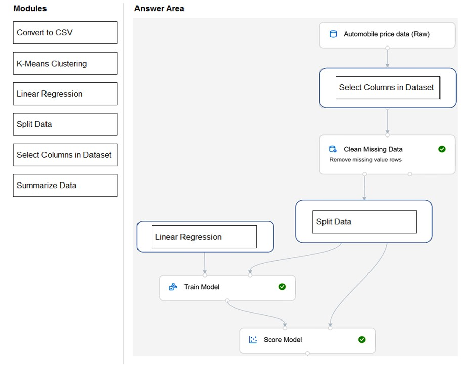
Box 1: Select Columns in Dataset
For Columns to be cleaned, choose the columns that contain the missing values you want to change. You can choose multiple columns, but you must use the same replacement method in all selected columns.
Example:

Box 2: Split data -
Splitting data is a common task in machine learning. You will split your data into two separate datasets. One dataset will train the model and the other will test how well the model performed.
Box 3: Linear regression -
Because you want to predict price, which is a number, you can use a regression algorithm. For this example, you use a linear regression model.
Reference:
Question 52
Which type of machine learning should you use to identify groups of people who have similar purchasing habits?
A. classification
B. regression
C. clustering
Answer 52
Correct Answer: C
Clustering is a machine learning task that is used to group instances of data into clusters that contain similar characteristics. Clustering can also be used to identify relationships in a dataset
**Reference:**
[https://docs.microsoft.com/en-us/dotnet/machine-learning/resources/tasks](https://docs.microsoft.com/en-us/dotnet/machine-learning/resources/tasks)
Question 53
HOTSPOT -
To complete the sentence, select the appropriate option in the answer area.
Hot Area:

Answer 53
Correct Answer: Regression
Regression is a machine learning task that is used to predict the value of the label from a set of related features.
Reference:
https://docs.microsoft.com/en-us/dotnet/machine-learning/resources/tasks
Question 54
Which metric can you use to evaluate a classification model?
A. true positive rate
B. mean absolute error (MAE)
C. coefficient of determination (R2)
D. root mean squared error (RMSE)
Answer 54
Correct Answer: A
What does a good model look like?
An ROC curve that approaches the top left corner with 100% true positive rate and 0% false positive rate will be the best model. A random model would display as a flat line from the bottom left to the top right corner. Worse than random would dip below the y=x line.
Reference:
Question 55
Which two components can you drag onto a canvas in Azure Machine Learning designer? Each correct answer presents a complete solution.
NOTE: Each correct selection is worth one point.
A. dataset
B. compute
C. pipeline
D. module
Answer 55
Correct Answer: A and D
You can drag-and-drop datasets and modules onto the canvas.
Reference:
https://docs.microsoft.com/en-us/azure/machine-learning/concept-designer
Question 56
You need to create a training dataset and validation dataset from an existing dataset.
Which module in the Azure Machine Learning designer should you use?
A. Select Columns in Dataset
B. Add Rows
C. Split Data
D. Join Data
Answer 56
Correct Answer: C
A common way of evaluating a model is to divide the data into a training and test set by using Split Data, and then validate the model on the training data.
Use the Split Data module to divide a dataset into two distinct sets.
The studio currently supports training/validation data splits
Reference:
Question 57
DRAG DROP -
Match the types of machine learning to the appropriate scenarios.
To answer, drag the appropriate machine learning type from the column on the left to its scenario on the right. Each machine learning type may be used once, more than once, or not at all.
NOTE: Each correct selection is worth one point.
Select and Place:

Answer 57

Box 1: Regression -
In the most basic sense, regression refers to prediction of a numeric target.
Linear regression attempts to establish a linear relationship between one or more independent variables and a numeric outcome, or dependent variable.
You use this module to define a linear regression method, and then train a model using a labeled dataset. The trained model can then be used to make predictions.
Box 2: Clustering -
Clustering, in machine learning, is a method of grouping data points into similar clusters. It is also called segmentation.
Over the years, many clustering algorithms have been developed. Almost all clustering algorithms use the features of individual items to find similar items. For example, you might apply clustering to find similar people by demographics. You might use clustering with text analysis to group sentences with similar topics or sentiment.
Box 3: Classification -
Two-class classification provides the answer to simple two-choice questions such as Yes/No or True/False.
Reference:
https://docs.microsoft.com/en-us/azure/machine-learning/studio-module-reference/linear-regression
Question 58
HOTSPOT -
To complete the sentence, select the appropriate option in the answer area.
Hot Area:
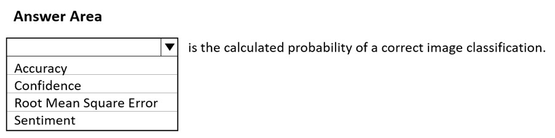
Answer 58
Correct Answer: Accuracy
Reference:
Question 59
HOTSPOT -
To complete the sentence, select the appropriate option in the answer area.
Hot Area:
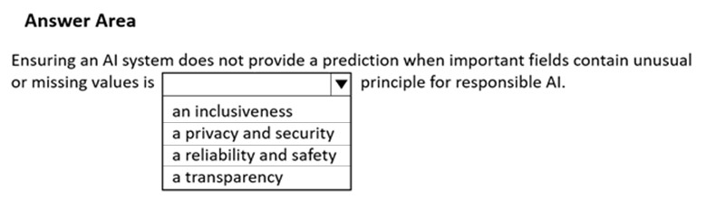
Answer 59
**Corrector Answer: a reliability and safety
Reference:
https://docs.microsoft.com/en-us/azure/cloud-adoption-framework/innovate/best-practices/trusted-ai
Question 60
HOTSPOT -
To complete the sentence, select the appropriate option in the answer area.
Hot Area:
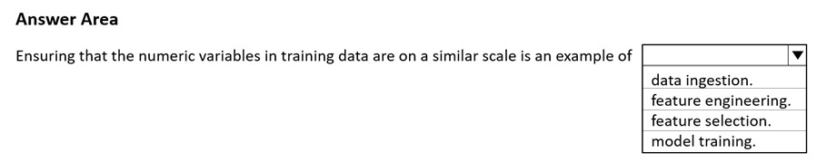
Answer 60
Corrector Answer: feature selection.
Reference:
https://docs.microsoft.com/en-us/azure/architecture/data-science-process/create-features
Question 61
HOTSPOT -
To complete the sentence, select the appropriate option in the answer area.
Hot Area:
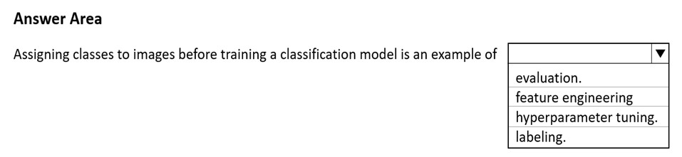
Answer 61
Correct Answer: labeling.
Reference:
https://docs.microsoft.com/en-us/azure/machine-learning/how-to-label-data
Question 62
Your company wants to build a recycling machine for bottles. The recycling machine must automatically identify bottles of the correct shape and reject all other items.
Which type of AI workload should the company use?
A. anomaly detection
B. conversational AI
C. computer vision
D. natural language processing
Answer 62
Correct Answer: C
Azure's Computer Vision service gives you access to advanced algorithms that process images and return information based on the visual features you're interested in. For example, Computer Vision can determine whether an image contains adult content, find specific brands or objects, or find human faces.
Reference:
https://docs.microsoft.com/en-us/azure/cognitive-services/computer-vision/overview
Question 63
HOTSPOT -
For each of the following statements, select Yes if the statement is true. Otherwise, select No.
NOTE: Each correct selection is worth one point.
Hot Area:
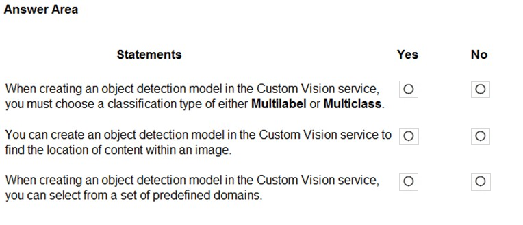
Answer 63
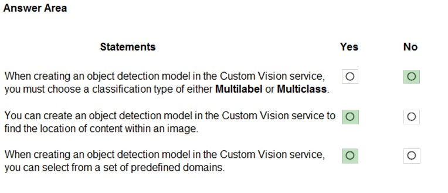
Reference:
Question 64
In which two scenarios can you use the Form Recognizer service? Each correct answer presents a complete solution.
NOTE: Each correct selection is worth one point.
A. Extract the invoice number from an invoice.
B. Translate a form from French to English.
C. Find image of product in a catalog.
D. Identify the retailer from a receipt.
Answer 64
Correct Answer: A and D
Reference:
https://azure.microsoft.com/en-gb/services/cognitive-services/form-recognizer/#features
Question 65
HOTSPOT -
You have a database that contains a list of employees and their photos.
You are tagging new photos of the employees.
For each of the following statements select Yes if the statement is true. Otherwise, select No.
NOTE: Each correct selection is worth one point.
Hot Area:

Answer 65
Correct Answer: Yes / Yes / No
Reference:
https://docs.microsoft.com/en-us/azure/cognitive-services/face/overview
https://docs.microsoft.com/en-us/azure/cognitive-services/face/concepts/face-detection
Question 66
You need to develop a mobile app for employees to scan and store their expenses while travelling.
Which type of computer vision should you use?
A. semantic segmentation
B. image classification
C. object detection
D. optical character recognition (OCR)
Answer 66
Correct Answer: D
Azure's Computer Vision API includes Optical Character Recognition (OCR) capabilities that extract printed or handwritten text from images. You can extract text from images, such as photos of license plates or containers with serial numbers, as well as from documents - invoices, bills, financial reports, articles, and more.
Reference:
https://docs.microsoft.com/en-us/azure/cognitive-services/computer-vision/concept-recognizing-text
Question 67
HOTSPOT -
For each of the following statements, select Yes if the statement is true. Otherwise, select No.
NOTE: Each correct selection is worth one point.
Hot Area:
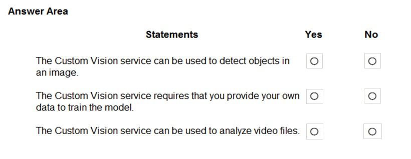
Answer 67
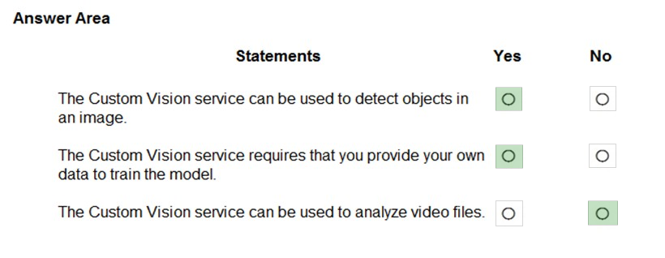
**Box 1: Yes -**
Custom Vision functionality can be divided into two features. Image classification applies one or more labels to an image. Object detection is similar, but it also returns the coordinates in the image where the applied label(s) can be found.
**Box 2: Yes -**
The Custom Vision service uses a machine learning algorithm to analyze images. You, the developer, submit groups of images that feature and lack the characteristics in question. You label the images yourself at the time of submission. Then, the algorithm trains to this data and calculates its own accuracy by testing itself on those same images.
**Box 3: No -**
Custom Vision service can be used only on graphic files.
**Reference:**
[https://docs.microsoft.com/en-us/azure/cognitive-services/Custom-Vision-Service/overview](https://docs.microsoft.com/en-us/azure/cognitive-services/Custom-Vision-Service/overview)
Question 68
You are processing photos of runners in a race.
You need to read the numbers on the runners' shirts to identity the runners in the photos.
Which type of computer vision should you use?
A. facial recognition
B. optical character recognition (OCR)
C. semantic segmentation
D. object detection
Answer 68
Correct Answer: B
Optical character recognition (OCR) allows you to extract printed or handwritten text from images and documents.
Reference:
https://docs.microsoft.com/en-us/azure/cognitive-services/computer-vision/overview-ocr
Question 69
DRAG DROP -
Match the types of machine learning to the appropriate scenarios.
To answer, drag the appropriate machine learning type from the column on the left to its scenario on the right. Each machine learning type may be used once, more than once, or not at all.
NOTE: Each correct selection is worth one point.
Select and Place:
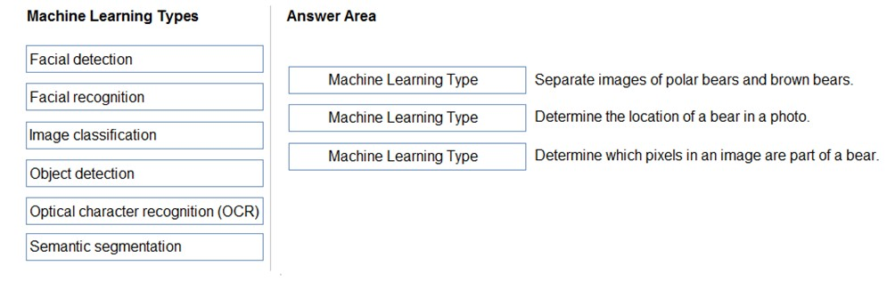
Answer 69
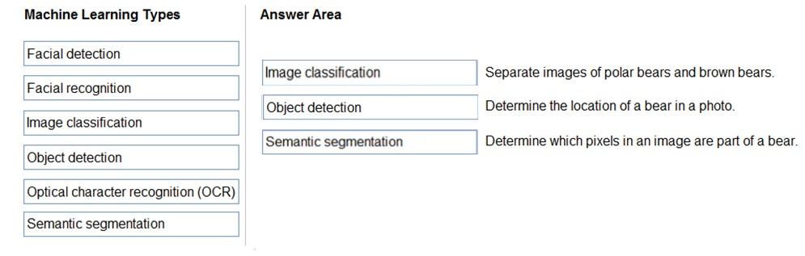
Box 1: Image classification -
Image classification is a supervised learning problem: define a set of target classes (objects to identify in images), and train a model to recognize them using labeled example photos.
Box 2: Object detection -
Object detection is a computer vision problem. While closely related to image classification, object detection performs image classification at a more granular scale. Object detection both locates and categorizes entities within images.
Box 3: Semantic Segmentation -
Semantic segmentation achieves fine-grained inference by making dense predictions inferring labels for every pixel, so that each pixel is labeled with the class of its enclosing object ore region.
Reference:
https://developers.google.com/machine-learning/practica/image-classification
https://docs.microsoft.com/en-us/dotnet/machine-learning/tutorials/object-detection-model-builder
https://nanonets.com/blog/how-to-do-semantic-segmentation-using-deep-learning/
Question 70
You use drones to identify where weeds grow between rows of crops to send an instruction for the removal of the weeds.
This is an example of which type of computer vision?
A. object detection
B. optical character recognition (OCR)
C. scene segmentation
Answer 70
Correct Answer: A
Object detection is similar to tagging, but the API returns the bounding box coordinates for each tag applied. For example, if an image contains a dog, cat and person, the Detect operation will list those objects together with their coordinates in the image.
Incorrect Answers:
B: Optical character recognition (OCR) allows you to extract printed or handwritten text from images and documents.
C: Scene segmentation determines when a scene changes in video based on visual cues. A scene depicts a single event and it's composed by a series of consecutive shots, which are semantically related.
Reference:
https://docs.microsoft.com/en-us/ai-builder/object-detection-overview
https://docs.microsoft.com/en-us/azure/cognitive-services/computer-vision/overview-ocr
Question 71
DRAG DROP -
Match the facial recognition tasks to the appropriate questions.
To answer, drag the appropriate task from the column on the left to its question on the right. Each task may be used once, more than once, or not at all.
NOTE: Each correct selection is worth one point.
Select and Place:
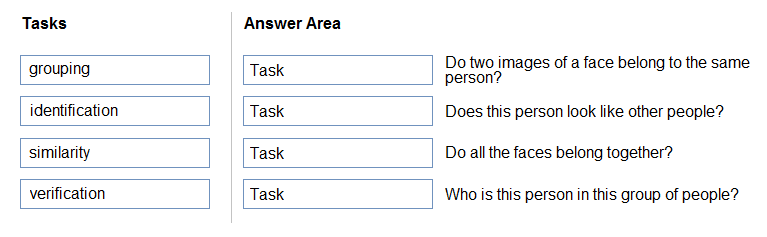
Answer 71
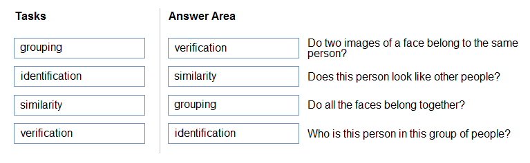
Box 1: verification -
Face verification: Check the likelihood that two faces belong to the same person and receive a confidence score.
Box 2: similarity -
Box 3: Grouping -
Box 4: identification -
Face detection: Detect one or more human faces along with attributes such as: age, emotion, pose, smile, and facial hair, including 27 landmarks for each face in the image.
Reference:
https://azure.microsoft.com/en-us/services/cognitive-services/face/#features
Question 72
DRAG DROP -
Match the types of computer vision workloads to the appropriate scenarios.
To answer, drag the appropriate workload type from the column on the left to its scenario on the right. Each workload type may be used once, more than once, or not at all.
NOTE: Each correct selection is worth one point.
Select and Place:

Answer 72

Box 1: Facial recognition -
Face detection that perceives faces and attributes in an image; person identification that matches an individual in your private repository of up to 1 million people; perceived emotion recognition that detects a range of facial expressions like happiness, contempt, neutrality, and fear; and recognition and grouping of similar faces in images.
Box 2: OCR -
Box 3: Objection detection -
Object detection is similar to tagging, but the API returns the bounding box coordinates (in pixels) for each object found. For example, if an image contains a dog, cat and person, the Detect operation will list those objects together with their coordinates in the image. You can use this functionality to process the relationships between the objects in an image. It also lets you determine whether there are multiple instances of the same tag in an image.
The Detect API applies tags based on the objects or living things identified in the image. There is currently no formal relationship between the tagging taxonomy and the object detection taxonomy. At a conceptual level, the Detect API only finds objects and living things, while the Tag API can also include contextual terms like "indoor", which can't be localized with bounding boxes.
Reference:
Question 73
You need to determine the location of cars in an image so that you can estimate the distance between the cars.
Which type of computer vision should you use?
A. optical character recognition (OCR)
B. object detection
C. image classification
D. face detection
Answer 73
Correct Answer: B
Object detection is similar to tagging, but the API returns the bounding box coordinates (in pixels) for each object found. For example, if an image contains a dog, cat and person, the Detect operation will list those objects together with their coordinates in the image. You can use this functionality to process the relationships between the objects in an image. It also lets you determine whether there are multiple instances of the same tag in an image.
The Detect API applies tags based on the objects or living things identified in the image. There is currently no formal relationship between the tagging taxonomy and the object detection taxonomy. At a conceptual level, the Detect API only finds objects and living things, while the Tag API can also include contextual terms like "indoor", which can't be localized with bounding boxes.
Reference:
https://docs.microsoft.com/en-us/azure/cognitive-services/computer-vision/concept-object-detection
Question 74
HOTSPOT -
To complete the sentence, select the appropriate option in the answer area.
Hot Area:
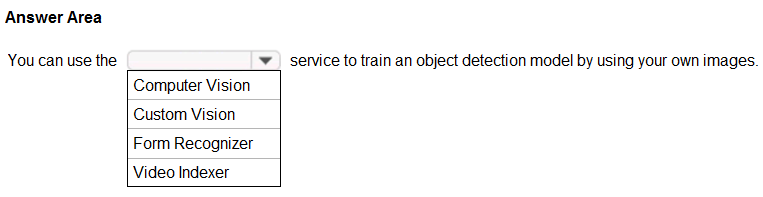
Answer 74
**Correct Answer: Custom Vision
Azure Custom Vision is a cognitive service that lets you build, deploy, and improve your own image classifiers. An image classifier is an AI service that applies labels (which represent classes) to images, according to their visual characteristics. Unlike the Computer Vision service, Custom Vision allows you to specify the labels to apply.
Note: The Custom Vision service uses a machine learning algorithm to apply labels to images. You, the developer, must submit groups of images that feature and lack the characteristics in question. You label the images yourself at the time of submission. Then the algorithm trains to this data and calculates its own accuracy by testing itself on those same images. Once the algorithm is trained, you can test, retrain, and eventually use it to classify new images according to the needs of your app. You can also export the model itself for offline use.
Incorrect Answers:
Computer Vision:
Azure's Computer Vision service provides developers with access to advanced algorithms that process images and return information based on the visual features you're interested in. For example, Computer Vision can determine whether an image contains adult content, find specific brands or objects, or find human faces.
Reference:
https://docs.microsoft.com/en-us/azure/cognitive-services/custom-vision-service/home
Question 75
You send an image to a Computer Vision API and receive back the annotated image shown in the exhibit.

Which type of computer vision was used?
A. object detection
B. semantic segmentation
C. optical character recognition (OCR)
D. image classification
Answer 75
Correct Answer: A
Object detection is similar to tagging, but the API returns the bounding box coordinates (in pixels) for each object found. For example, if an image contains a dog, cat and person, the Detect operation will list those objects together with their coordinates in the image. You can use this functionality to process the relationships between the objects in an image. It also lets you determine whether there are multiple instances of the same tag in an image.
The Detect API applies tags based on the objects or living things identified in the image. There is currently no formal relationship between the tagging taxonomy and the object detection taxonomy. At a conceptual level, the Detect API only finds objects and living things, while the Tag API can also include contextual terms like "indoor", which can't be localized with bounding boxes.
Reference:
https://docs.microsoft.com/en-us/azure/cognitive-services/computer-vision/concept-object-detection
Question 76
What are two tasks that can be performed by using the Computer Vision service? Each correct answer presents a complete solution.
NOTE: Each correct selection is worth one point.
A. Train a custom image classification model.
B. Detect faces in an image.
C. Recognize handwritten text.
D. Translate the text in an image between languages.
Answer 76
Correct Answer: B and C
B: Azure's Computer Vision service provides developers with access to advanced algorithms that process images and return information based on the visual features you're interested in. For example, Computer Vision can determine whether an image contains adult content, find specific brands or objects, or find human faces.
C: Computer Vision includes Optical Character Recognition (OCR) capabilities. You can use the new Read API to extract printed and handwritten text from images and documents.
Reference:
https://docs.microsoft.com/en-us/azure/cognitive-services/computer-vision/home
Question 77
Answer 77
here
Question 78
Answer 78
here
Question 79
Answer 79
here
Question 80
Answer 80
here
Question 81
Answer 81
here
Question 82
Answer 82
here
Question 83
Answer 83
here
Question 84
Answer 84
here
Question 85
Answer 85
here
Question 86
Answer 86
here
Question 87
Answer 87
here
Question 88
Answer 88
here
Question 89
Answer 89
here
Question 90
Answer 90
here
Question 91
Answer 91
here
Question 92
Answer 92
here
Question 93
Answer 93
here
Question 94
Answer 94
here
Question 95
Answer 95
here
Question 96
Answer 96
here
Question 97
Answer 97
here
Question 98
Answer 98
here
Question 99
Answer 99
here
Question 100
Answer 100
here
Question 101
Answer 101
here
Question 102
Answer 102
here
Question 103
Answer 103
here
Question 104
Answer 104
here
Question 105
Answer 105
here
Question 106
Answer 106
here
Question 107
Answer 107
here
Question 108
Answer 108
here
Question 109
Answer 109
here
Question 110
Answer 110
here
Question 111
Answer 111
here
Question 112
Answer 112
here
Question 113
Answer 113
here
Question 114
Answer 114
here
Question 115
Answer 115
here
Question 116
Answer 116
here
Question 117
Answer 117
here
Question 118
Answer 118
here
Question 119
Answer 119
here
Question 120
Answer 120
here
Question 121
Answer 121
here
Question 122
Answer 122
here
Question 123
Answer 123
here
Question 124
Answer 124
here
Question 125
Answer 125
here
Question 126
Answer 126
here
Question 127
Answer 127
here
Question 128
Answer 128
here
Question 129
Answer 129
here
Question 130
Answer 130
here
Question 131
Answer 131
here
Question 132
Answer 132
here